Praktikum 8
Laporan Praktikum Aplikasi Mobile
Praktikum 8
PENDAHULUAN
Pada praktikum kali ini kita akan membahas penerapan HTTP request dan integrasi REST API pada aplikasi ResepKu. Pada modul-modul sebelumnya, aplikasi ResepKu masih menggunakan enam resep statis (dummy) yang ditulis langsung di dalam kode program. Melalui modul ini, sumber data aplikasi beralih sepenuhnya ke layanan API eksternal untuk mengambil data resep dari server. Integrasi API ini melanjutkan konsep pemrograman asinkron dan pemisahan data dari tampilan yang telah dipelajari pada pertemuan teori maupun praktikum sebelumnya. Mahasiswa diarahkan untuk mengubah struktur model data melalui factory fromJson agar mampu mengonversi format JSON menjadi objek model Recipe, serta memusatkan komunikasi jaringan ke dalam kelas RecipeService menggunakan package http. Selain mengambil data melalui metode GET, modul ini juga mencakup penanganan kondisi antarmuka saat proses pemuatan berlangsung, ketika terjadi gangguan jaringan atau kesalahan server, serta fitur pembaruan data melalui pull-to-refresh dan pengiriman data baru menggunakan metode POST. Dengan pendekatan tersebut, mahasiswa memahami alur kerja aplikasi mobile yang berinteraksi dengan server sungguhan maupun simulasi API secara terstruktur dan aman.
TUJUAN
- Mahasiswa mampu memahami struktur respons JSON dari REST API serta mengimplementasikan factory fromJson pada model
- Mahasiswa mampu melakukan request GET menggunakan package http di dalam kelas RecipeService serta menampilkan daftar resep melalui FutureBuilder lengkap dengan loading state, error state, tombol coba lagi, dan pull-to-refresh
- Mahasiswa mampu mengirimkan data resep baru melalui form dengan request POST, melakukan validasi input, serta menangani hasil maupun kegagalan proses
ISI
1. Pertama-tama kita akan membuat kodingan yang berfungsi untuk menginisialisasi aplikasi ResepKu dengan menerapkan MultiProvider untuk mengelola data favorit, tema aplikasi, dan layanan resep agar dapat digunakan oleh berbagai halaman
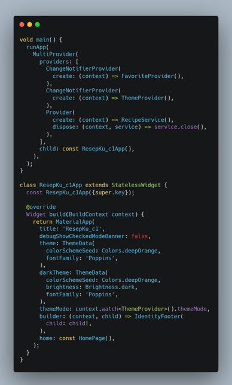
2. Setelah itu kita akan buat kodingan yang berfungsi untuk menyimpan data resep makanan, seperti nama, jenis masakan, tingkat kesulitan, waktu memasak, bahan, dan langkah-langkah pembuatan. Konstruktor digunakan untuk menginisialisasi data resep, sedangkan totalTimeMinutes menghitung total waktu memasak dan Recipe.fromJson() mengubah data JSON menjadi objek Recipe dengan memberikan nilai bawaan apabila terdapat data yang kosong atau tidak tersedia.
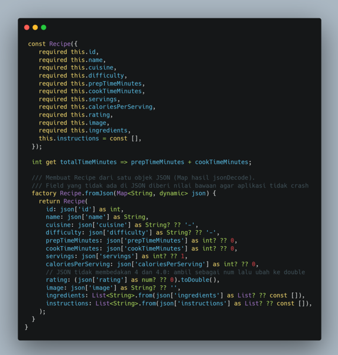
3. Selanjutnya buat kodingan yang berfungsi untuk mengambil data resep makanan dari API DummyJSON menggunakan metode HTTP GET, kemudian mengubah data JSON menjadi daftar objek Recipe. Selain itu, kode ini mengatur batas waktu koneksi selama 10 detik, memeriksa status respons server, menangani kesalahan melalui RecipeServiceException, serta menutup koneksi HTTP setelah tidak digunakan
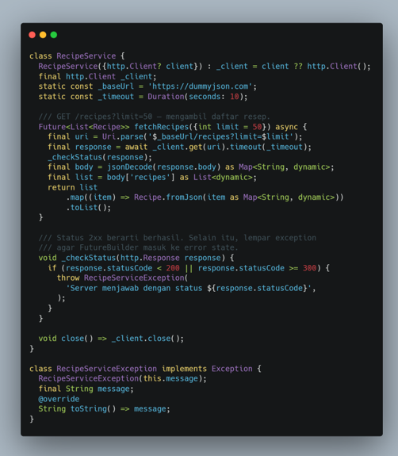
4. Kemudian buat kodingan yang berfungsi untuk mengatur proses pengambilan dan pemuatan ulang data resep pada halaman utama (HomePage), dengan variabel _isGrid untuk menentukan tampilan daftar resep dan _recipesFuture untuk menyimpan proses pengambilan data dari API. Fungsi initState() mengambil data saat halaman pertama kali dibuka, _reload() memuat ulang data, sedangkan _refresh() menjalankan proses penyegaran data dan menangani kesalahan yang nantinya ditampilkan melalui FutureBuilder
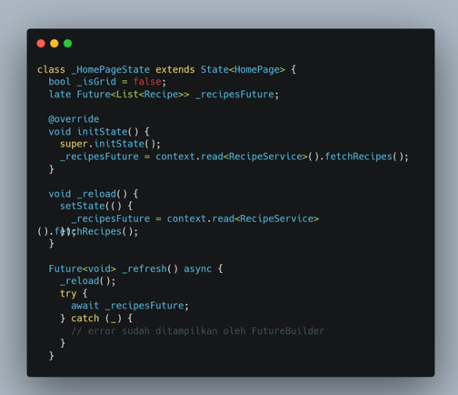
5. Lalu buat kodingan yang berfungsi untuk mengatur tampilan berdasarkan proses pengambilan data resep dari API, seperti menampilkan indikator loading saat data sedang dimuat, pesan kesalahan jika pengambilan data gagal, dan pesan apabila data resep kosong. Jika data berhasil diperoleh, aplikasi menampilkan resep dalam bentuk daftar atau grid sesuai pilihan pengguna serta menyediakan fitur RefreshIndicator untuk memperbarui data dengan menarik layar ke bawah
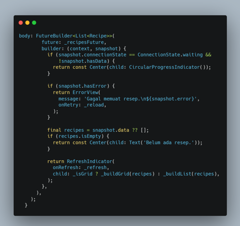
6. Selanjutnya kita perlu juga membuat kodingan yang berfungsi untuk menampilkan data resep, yaitu _buildList() yang menyusun resep secara vertikal menggunakan ListView.builder dan _buildGrid() yang menampilkan resep dalam bentuk kotak menggunakan GridView.builder. Pada tampilan grid, setiap resep disusun menjadi dua kolom dengan jarak antaritem sebesar 8 piksel, sedangkan data resep ditampilkan menggunakan widget RecipeTile atau RecipeGridCard
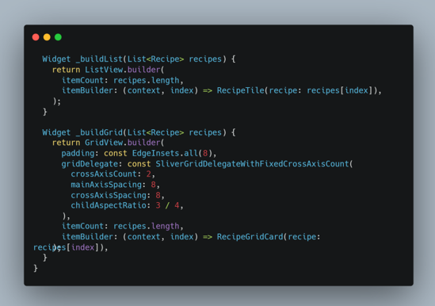
7. Selanjutnya buat kodingan yang berfungsi untuk menampilkan pemberitahuan ketika aplikasi mengalami kesalahan saat memuat data, seperti kegagalan koneksi internet. Tampilan ini terdiri dari ikon gangguan jaringan, pesan kesalahan, serta tombol Coba lagi yang menjalankan fungsi onRetry agar aplikasi dapat mengulangi proses pengambilan data
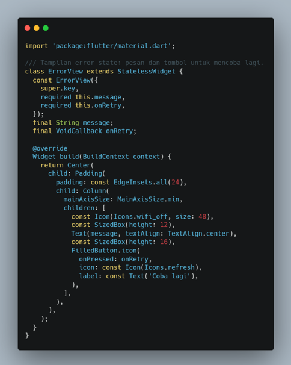
8. Setelah itu buat kodingan yang berfungsi untuk menampilkan informasi resep dalam bentuk daftar, meliputi gambar, nama makanan, jenis masakan, total waktu memasak, dan rating. Widget ini juga menggunakan FavoriteProvider untuk menambahkan atau menghapus resep dari daftar favorit serta Navigator.push untuk membuka halaman detail resep ketika pengguna memilih salah satu resep
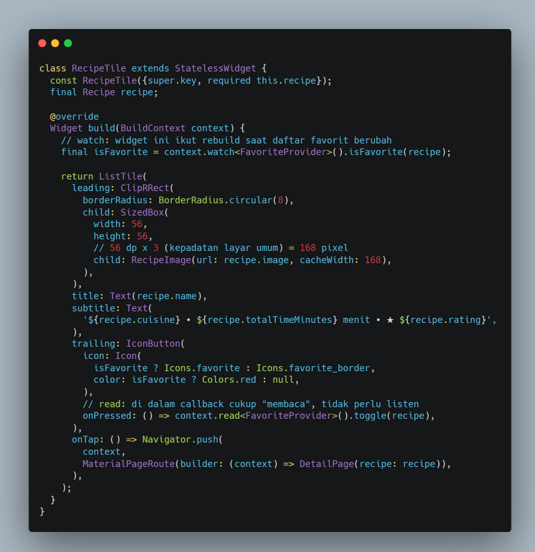
9. Kemudian buat kodingan yang berfungsi untuk menampilkan resep makanan dalam bentuk kartu (Card) dengan susunan gambar, nama makanan, rating, dan total waktu memasak, serta menggunakan InkWell agar kartu dapat ditekan untuk membuka halaman detail resep. Selain itu, terdapat tombol ikon hati yang terhubung dengan FavoriteProvider untuk menambahkan atau menghapus resep dari daftar favorit, sehingga tampilannya otomatis berubah sesuai status favorit
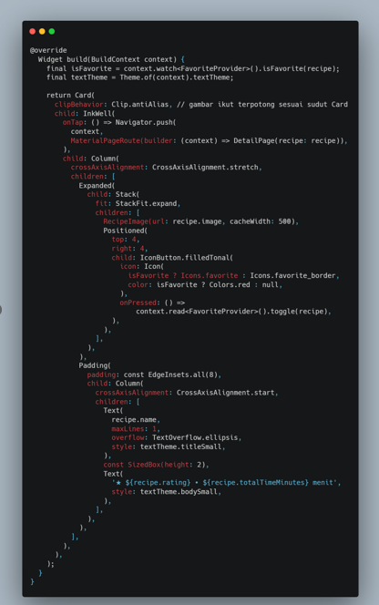
10. Lalu buat kodingan yang berfungsi untuk menampilkan gambar resep dari internet menggunakan Image.network dengan pengaturan BoxFit.cover agar gambar memenuhi area yang tersedia, serta cacheWidth untuk mengurangi penggunaan memori. Widget ini juga menyediakan tampilan sementara berupa ikon makanan ketika gambar sedang dimuat (loading state) dan menampilkan gambar pengganti (placeholder) apabila gambar gagal dimuat akibat URL yang salah atau masalah koneksi internet
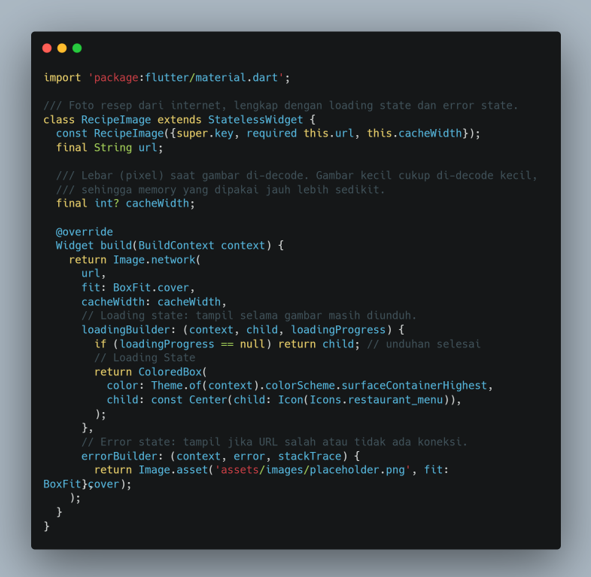
11. Selanjutnya buat kodingan yang berfungsi untuk menampilkan informasi lengkap mengenai resep makanan yang dipilih, dengan menggunakan StatefulWidget agar jumlah porsi dapat diubah oleh pengguna. Fungsi initState() mengatur jumlah porsi awal sesuai data resep, sedangkan _addServing() menambah jumlah porsi dan _removeServing() menguranginya dengan ketentuan jumlah porsi tidak boleh kurang dari satu
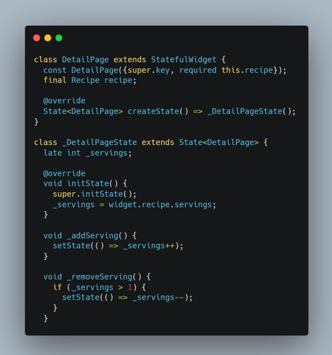
12. Setelah itu buat kodingan yang berfungsi untuk menampilkan bagian langkah-langkah pembuatan resep dengan judul Langkah yang hanya muncul apabila data instruksi tersedia. Setiap langkah ditampilkan menggunakan SliverList.builder dengan nomor urut dalam bentuk CircleAvatar, sehingga pengguna dapat membaca tahapan memasak secara berurutan, kemudian diakhiri dengan jarak tambahan di bagian bawah halaman.
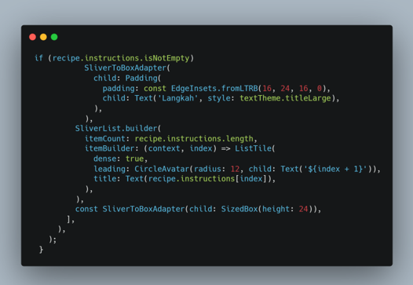
13. Kemudian buat kodingan yang berfungsi untuk menampilkan halaman khusus untuk menyimpan dan mengelola resep makanan yang telah ditandai sebagai favorit oleh pengguna. Widget Consumer<FavoriteProvider> digunakan untuk memantau perubahan jumlah resep favorit, sedangkan tombol Hapus semua akan dinonaktifkan apabila tidak ada resep favorit dan akan menampilkan dialog konfirmasi ketika pengguna ingin menghapus seluruh daftar favorit
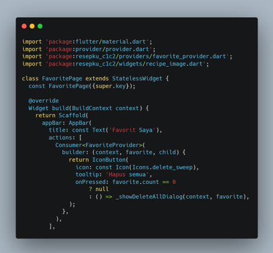
14. Lalu kita juga perlu membuat kodingan yang berfungsi untuk menampilkan tombol favorit dengan ikon hati dan jumlah resep yang telah disimpan melalui FavoriteProvider. Jumlah favorit akan diperbarui secara otomatis menggunakan context.watch, sedangkan ketika tombol ditekan, aplikasi akan membuka halaman FavoritePage untuk melihat daftar resep yang telah ditambahkan ke favorit
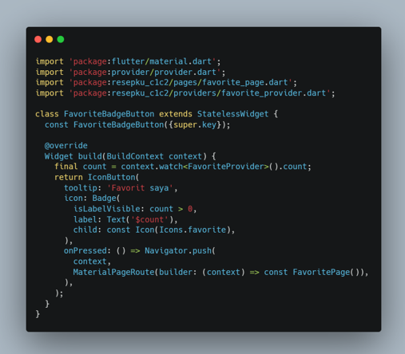
15. Selanjutnya buat kodingan yang berfungsi untuk mengatur tema tampilan aplikasi, baik mode terang, mode gelap, maupun mengikuti pengaturan sistem perangkat. Fungsi setThemeMode() digunakan untuk mengubah tema aplikasi sesuai pilihan pengguna, sedangkan notifyListeners() memberi tahu seluruh widget yang menggunakan provider agar memperbarui tampilannya secara otomatis
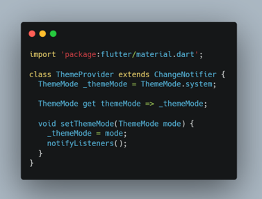
16. Terakhir, kita perlu membuat kodingan ini yang berfungsi untuk menyediakan pengaturan tampilan aplikasi, khususnya untuk mengubah mode tema menjadi terang, gelap, atau mengikuti pengaturan sistem perangkat. context.watch<ThemeProvider>() digunakan untuk memantau perubahan tema, sedangkan ListTile menampilkan menu pengaturan beserta informasi tema yang sedang digunakan dan menjalankan _showThemeDialog() ketika menu ditekan
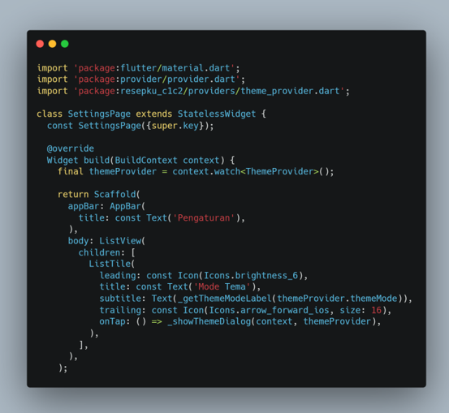
Output C1 dan C2
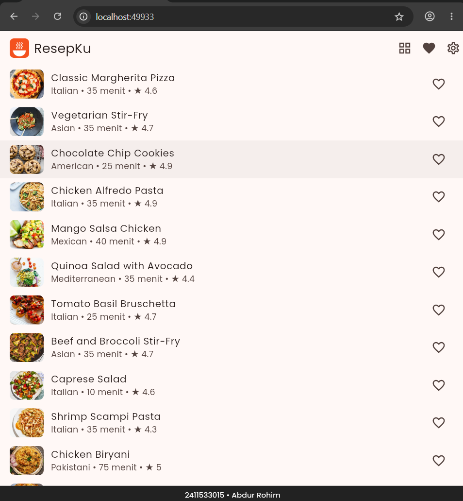
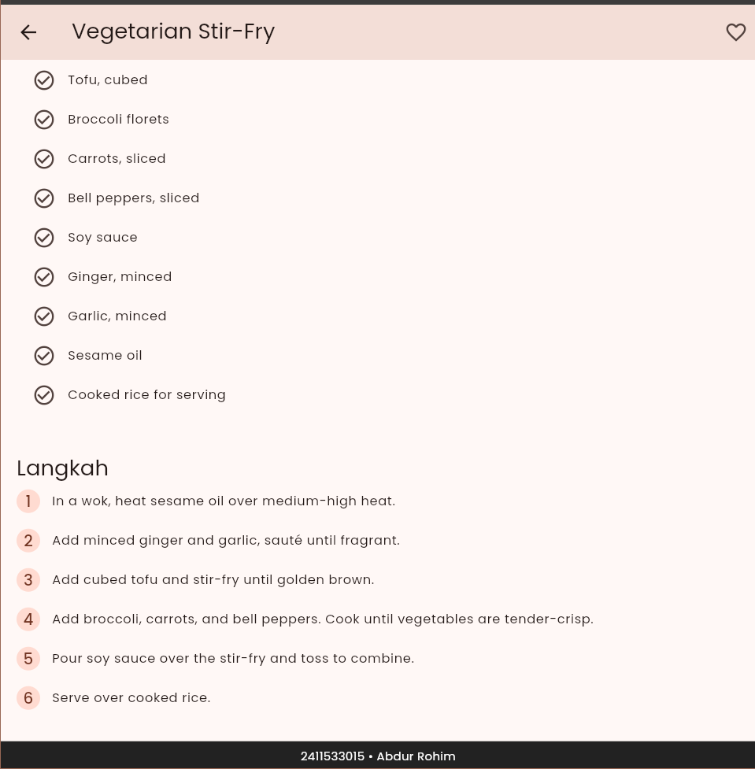
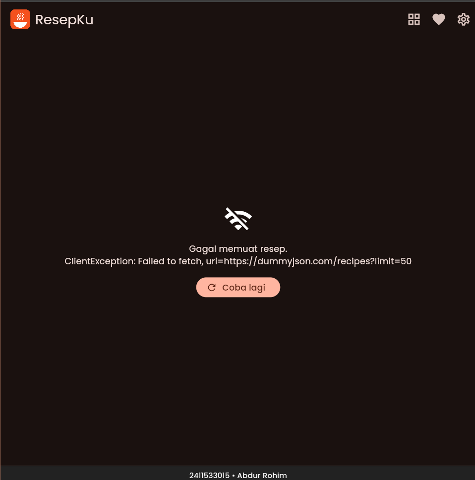
17. Selanjutnya kita buat kodingan yang berfungsi untuk menginisialisasi aplikasi ResepKu C3 dengan menerapkan MultiProvider untuk mengelola data resep favorit, pengaturan tema, dan layanan pengambilan data resep dari API. Selanjutnya, MaterialApp mengatur konfigurasi aplikasi, seperti tema terang dan gelap, jenis huruf Poppins, menghilangkan tanda debug, menampilkan IdentityFooter pada setiap halaman, serta menetapkan HomePage sebagai halaman utama aplikasi
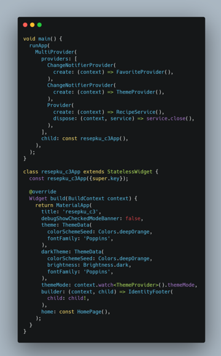
18. Setelah itu buat kodingan yang berfungsi untuk menambahkan resep baru ke API DummyJSON menggunakan metode HTTP POST dengan mengirimkan data berupa nama makanan, jenis masakan, dan waktu memasak dalam format JSON. Setelah mendapatkan respons dari server, kode memeriksa status keberhasilan, mengubah respons JSON menjadi objek Recipe, dan mengembalikannya agar dapat digunakan oleh aplikasi
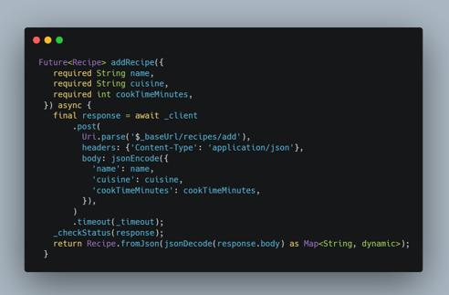
19. Kemudian buat kodingan yang berfungsi untuk menyediakan kolom input nama resep, jenis masakan, dan waktu memasak, serta melakukan validasi agar data yang dimasukkan sesuai dengan ketentuan. Tombol Simpan menjalankan fungsi _save() untuk mengirimkan data resep, sedangkan indikator CircularProgressIndicator ditampilkan selama proses penyimpanan berlangsung dan tombol dinonaktifkan sementara
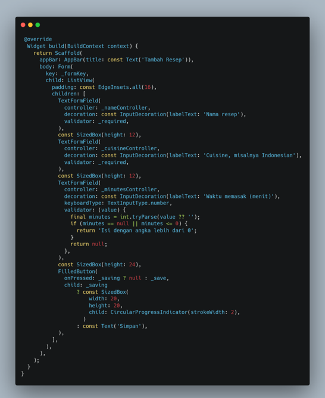
20. Lalu buat kodingan yang berfungsi untuk mengatur proses pengambilan dan penyegaran data resep melalui initState(), _reload(), dan _refresh(), serta menyediakan fungsi _openAddPage() untuk membuka halaman penambahan resep baru. Setelah pengguna menyimpan resep dan kembali ke halaman utama, aplikasi menampilkan notifikasi menggunakan SnackBar yang berisi nama serta ID resep yang diterima server, dengan catatan bahwa DummyJSON hanya menyimulasikan proses penyimpanan dan tidak menyimpan data secara permanen
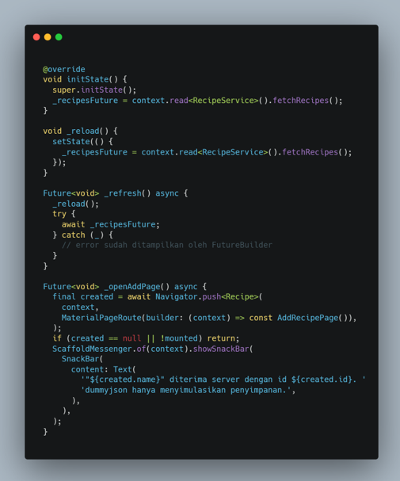
21. Selanjutnya buat kodingan yang berufungsi untuk menambahkan FloatingActionButton pada halaman utama yang berfungsi sebagai tombol untuk menambahkan resep baru dengan menampilkan ikon tambah (+). Ketika tombol ditekan, fungsi _openAddPage() dijalankan untuk membuka halaman AddRecipePage sehingga pengguna dapat mengisi dan mengirimkan data resep baru
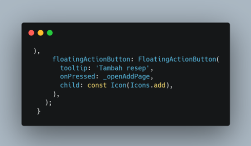
Output C3
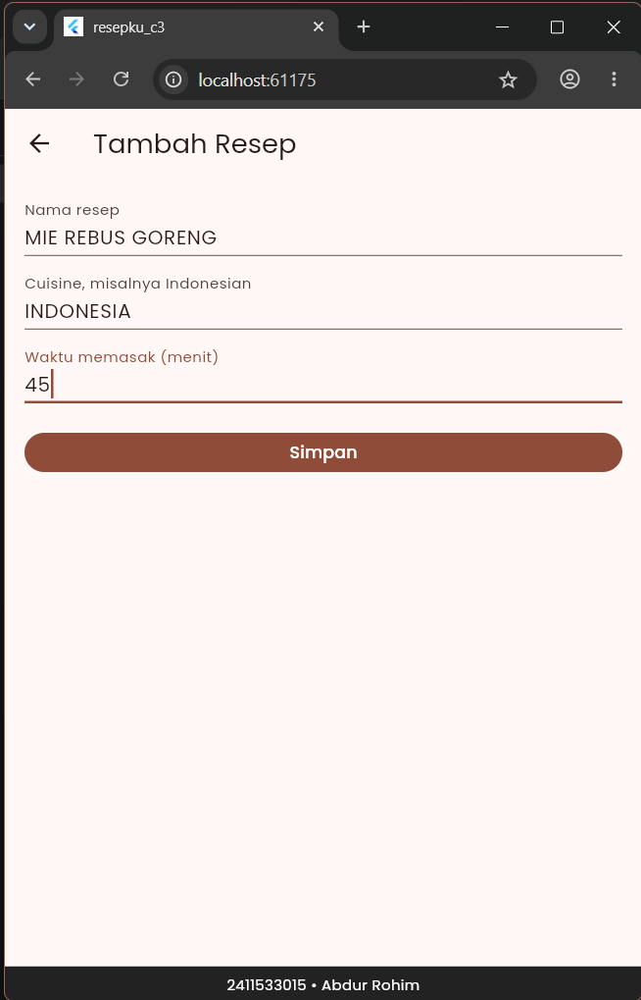
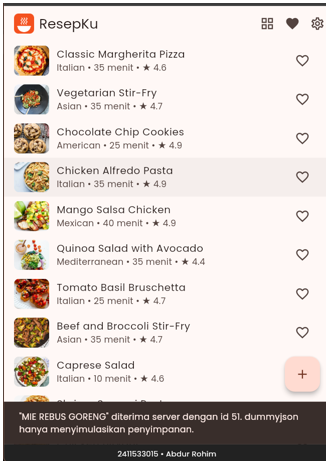
22. Selanjutnya kita akan buat kodingan yang berfungsi untuk menginisialisasi aplikasi ResepKu L1 dengan menerapkan MultiProvider untuk mengelola data resep favorit, pengaturan tema, dan layanan pengambilan data resep dari API. Selanjutnya, MaterialApp mengatur konfigurasi tampilan aplikasi, seperti tema terang dan gelap, jenis huruf Poppins, menghilangkan tanda debug, menampilkan IdentityFooter pada setiap halaman, serta menetapkan HomePage sebagai halaman utama aplikasi
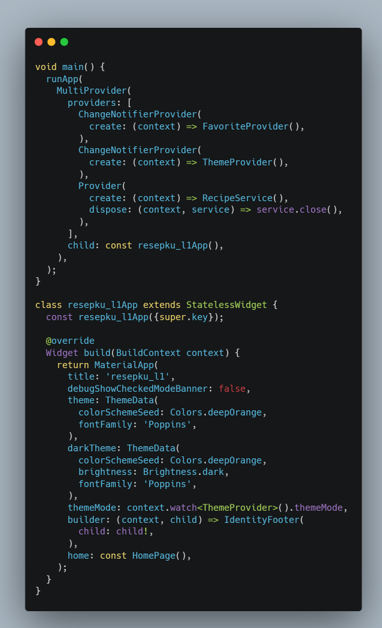
Output L1
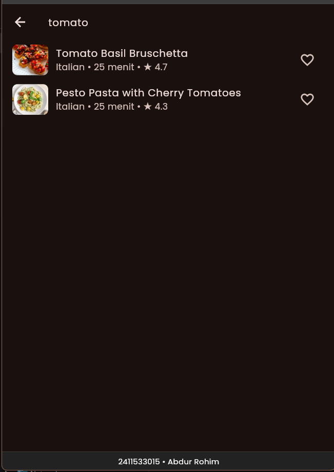
23. Selanjutnya kita akan membuat kodingan yang berfungsi untuk mencari resep berdasarkan kata kunci yang dimasukkan pengguna melalui API DummyJSON menggunakan metode GET, serta addRecipe() untuk mengirimkan data resep baru ke server menggunakan metode POST dalam format JSON. Kedua fungsi tersebut memeriksa status respons server dan mengolah data JSON menjadi objek Recipe agar dapat digunakan dan ditampilkan oleh aplikasi
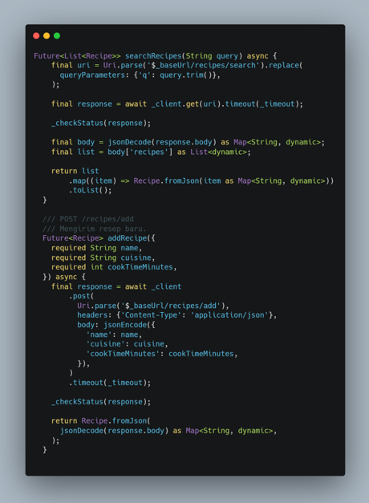
24. Setelah itu buat kodingan yang berfungsi untuk mengatur proses pencarian resep berdasarkan kata kunci yang dimasukkan pengguna melalui TextEditingController. Fungsi _searchRecipes() akan menjalankan pencarian melalui RecipeService ketika pengguna menekan Enter, mengosongkan hasil pencarian apabila kata kunci kosong, serta memperbarui data pencarian menggunakan setState(), sedangkan dispose() digunakan untuk membersihkan controller ketika halaman tidak lagi digunakan
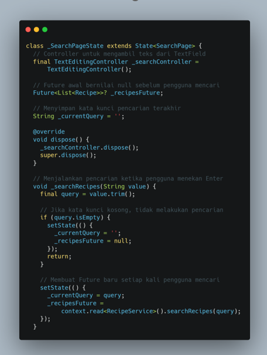
25. Kemudian buat kodingan yang berfungsi untuk menampilkan kolom pencarian resep pada bagian AppBar dengan menggunakan TextField yang terhubung ke _searchController untuk membaca kata kunci yang dimasukkan pengguna. Atribut autofocus membuat kolom pencarian langsung aktif ketika halaman dibuka, sedangkan onSubmitted menjalankan fungsi _searchRecipes ketika pengguna menekan tombol Enter atau Search pada keyboard
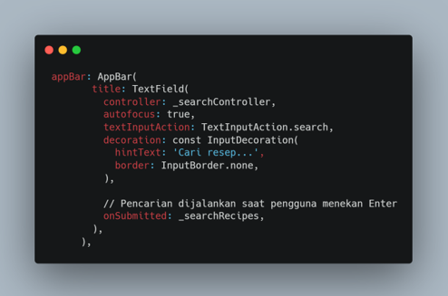
26. Lalu buat kodingan yang berfungsi untuk mengatur tampilan bagian utama halaman pencarian berdasarkan kondisi _recipesFuture, yaitu menampilkan ikon pencarian dan petunjuk ketika pengguna belum memasukkan kata kunci, serta menggunakan FutureBuilder untuk memproses hasil pencarian. Selama proses pencarian berlangsung, aplikasi menampilkan CircularProgressIndicator sebagai indikator bahwa data resep sedang dimuat dari API.
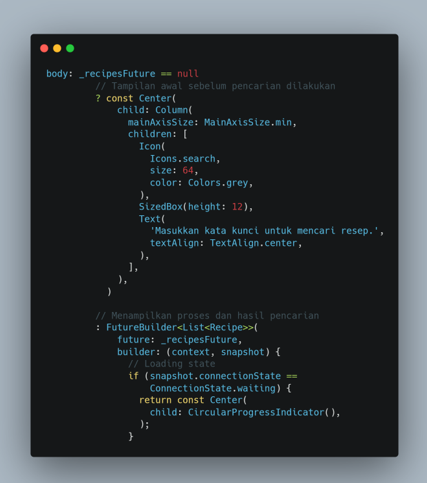
27. Selanjutnya buat kodingan yang berfungsi untuk mengatur proses pencarian resep pada halaman SearchPage, dengan fungsi dispose() untuk membersihkan TextEditingController ketika halaman ditutup agar tidak terjadi penggunaan memori yang tidak diperlukan. Sementara itu, fungsi _searchRecipes() mengambil kata kunci dari pengguna, menghapus spasi berlebih, mengosongkan hasil pencarian jika kata kunci kosong, serta menjalankan pencarian melalui RecipeService dan memperbarui tampilan menggunakan setState()
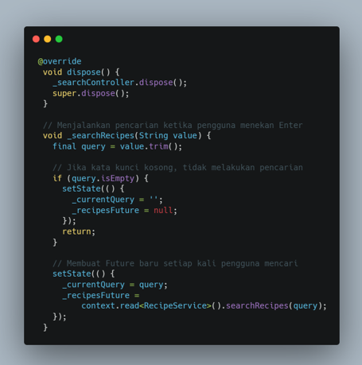
28. Setelah itu buat kodingan yang berfungsi untuk menyediakan tombol pengubah tampilan resep antara bentuk daftar (list) dan kotak (grid) melalui IconButton. Ketika tombol ditekan, nilai _isGrid akan diubah menggunakan setState() sehingga ikon dan tampilan resep diperbarui secara otomatis sesuai pilihan pengguna
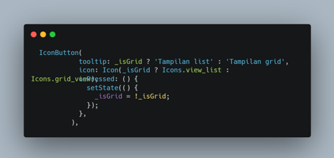
29. Kemudian buat kodingan yang berfungsi untuk mengubah nama resep melalui dialog AlertDialog yang menampilkan kolom input dengan nama resep sebelumnya sebagai nilai awal. Pengguna dapat memasukkan nama baru, kemudian menekan tombol Simpan untuk mengembalikan nama yang telah diperbarui atau tombol Batal untuk membatalkan perubahan tanpa menyimpan data
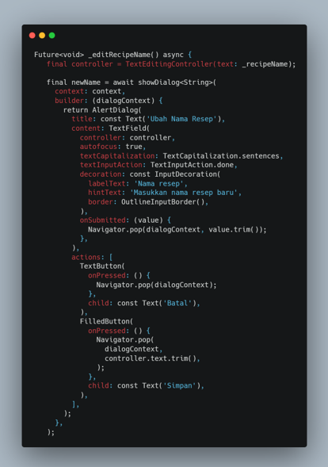
30. Lalu buat kodingan yang berfungsi untuk menampilkan dialog konfirmasi sebelum pengguna menghapus resep, dengan menampilkan nama resep yang akan dihapus. Pengguna dapat memilih tombol Hapus untuk mengonfirmasi penghapusan atau tombol Batal untuk membatalkan tindakan, kemudian hasil pilihan disimpan dalam variabel confirmed dalam bentuk nilai boolean (true atau false)
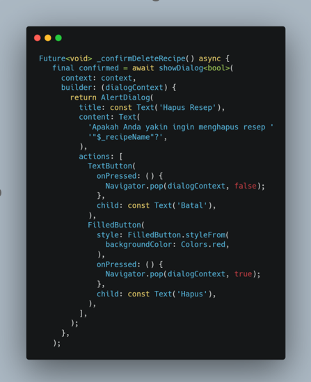
31. Selanjutnya buat kodingan yang berfungsi untuk menyediakan menu pilihan pengelolaan resep, yaitu Ubah nama dan Hapus resep yang ditampilkan ketika pengguna menekan tombol menu. Melalui onSelected, aplikasi akan menjalankan fungsi _editRecipeName() untuk mengubah nama resep atau _confirmDeleteRecipe() untuk menampilkan konfirmasi sebelum resep dihapus
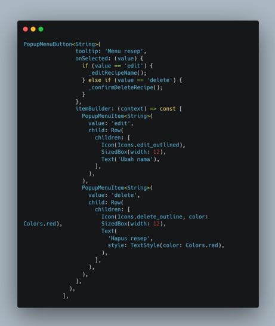
32. Setelah itu buat kodingan yang berfungsi untuk menampilkan nama resep sebagai judul pada bagian atas halaman sekaligus menampilkan gambar resep dari internet menggunakan CachedNetworkImage. Selama gambar sedang dimuat, aplikasi menampilkan warna latar dan ikon makanan sebagai tampilan sementara (placeholder), sehingga halaman tetap terlihat rapi sebelum gambar berhasil ditampilkan
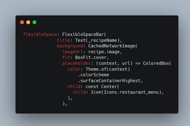
Output L2
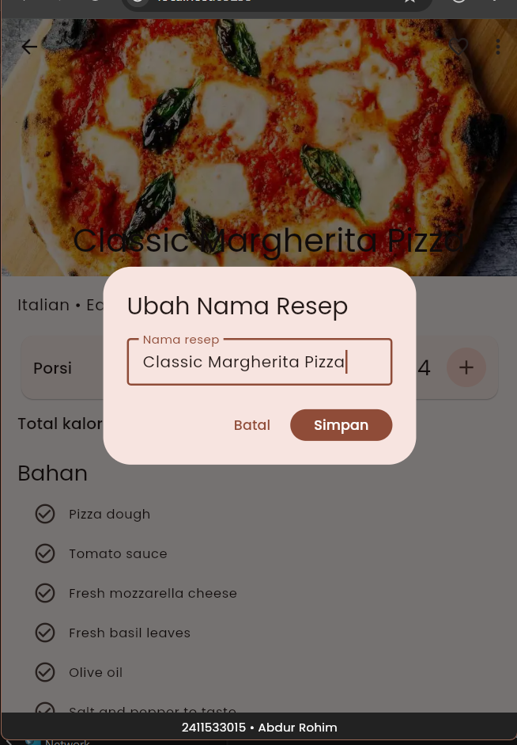
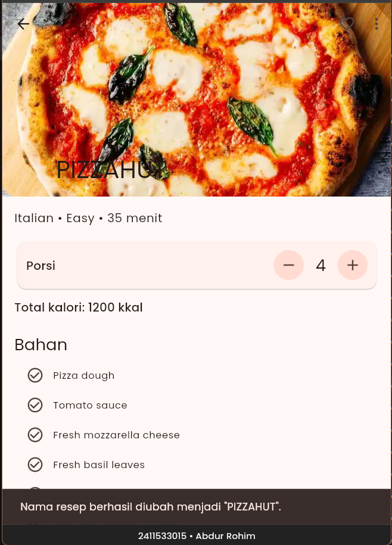
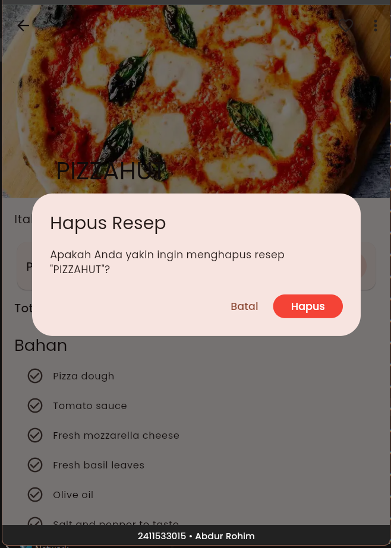
33. Selanjutnya buat kodingan yang berfungsi untuk menginisialisasi aplikasi ResepKu L2 dengan menerapkan MultiProvider untuk mengelola data resep favorit, pengaturan tema, dan layanan pengambilan data resep dari API. Selanjutnya, MaterialApp mengatur konfigurasi tampilan aplikasi, seperti tema terang dan gelap, jenis huruf Poppins, menghilangkan tanda debug, menampilkan IdentityFooter pada setiap halaman, serta menetapkan HomePage sebagai halaman utama aplikasi
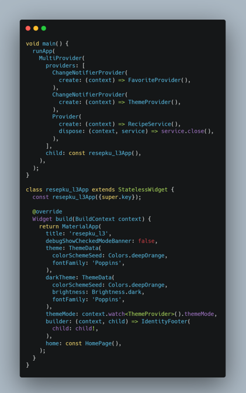
LANGKAH PENGERJAAN D2
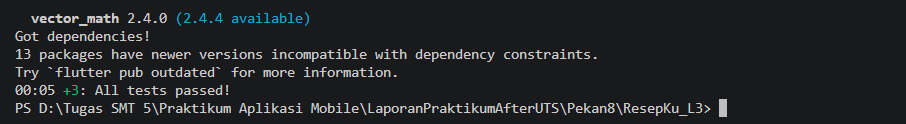
TABEL LANGKAH A1
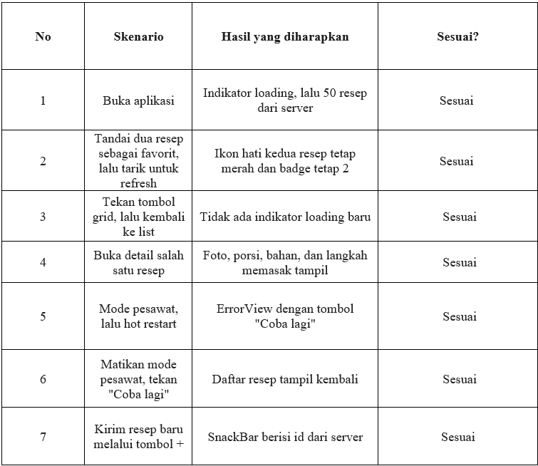
PERTANYAAN REFLEKTIF
1. Pada skenario 2, setiap refresh membuat objek Recipe yang baru dari JSON. Mengapa status favorit tetap benar? Hubungkan dengan cara FavoriteProvider membandingkan resep (Modul 6).
Status favorit tetap terjaga karena FavoriteProvider tidak membandingkan objek Recipe secara langsung, melainkan menggunakan atribut id sebagai acuan. Jadi, meskipun data resep diperbarui dan menghasilkan objek baru dari JSON, aplikasi tetap dapat mengenali resep favorit selama ID-nya tidak berubah
2. Pada skenario 3, mengapa menekan tombol grid tidak memunculkan indikator loading? Apa yang akan terjadi jika future ditulis langsung di dalam build()?
Tombol grid tidak menampilkan indikator loading karena _recipesFuture disimpan dalam variabel state dan hanya dibuat saat initState() dijalankan. Ketika tombol grid ditekan, setState() hanya mengubah nilai _isGrid, sehingga FutureBuilder tetap menggunakan proses pengambilan data yang sama dan tidak mengirimkan permintaan HTTP baru
3. HomePage tidak memanggil http.get secara langsung, melainkan melalui RecipeService. Sebutkan dua keuntungan cara ini.
Penggunaan RecipeService memiliki beberapa manfaat, yaitu memisahkan proses komunikasi HTTP dari bagian tampilan sehingga kode HomePage lebih sederhana dan mudah dipahami, serta memusatkan pengaturan permintaan data seperti URL API, batas waktu koneksi, dan pemeriksaan respons server. Selain itu, RecipeService dapat digunakan kembali pada halaman lain tanpa harus menulis ulang kode untuk proses komunikasi HTTP
4. Setelah POST berhasil, server memberi id baru, tetapi resep tidak muncul saat daftar dimuat ulang. Jelaskan penyebabnya, dan bagaimana aplikasi dengan server sungguhan biasanya menampilkan data yang baru ditambahkan
Resep tidak muncul kembali setelah daftar diperbarui karena DummyJSON hanya menyimulasikan proses POST tanpa menyimpan data secara permanen. Selain itu, aplikasi hanya menampilkan informasi respons melalui SnackBar dan tidak menambahkan resep baru ke daftar lokal, sedangkan pada server sebenarnya data akan tersimpan di database sehingga dapat diambil kembali oleh aplikasi
5. Di AddRecipePage terdapat if (!mounted) return; setelah await. Jelaskan skenario yang dicegah oleh baris tersebut.
Baris if (!mounted) return; digunakan untuk memastikan halaman AddRecipePage masih aktif sebelum aplikasi mengakses context atau menjalankan navigasi. Hal ini mencegah terjadinya kesalahan ketika pengguna meninggalkan halaman saat proses pengiriman data masih berlangsung, sehingga Navigator.pop() hanya dijalankan jika halaman masih terpasang
KESIMPULAN
Berdasarkan praktikum yang telah dilakukan, dapat disimpulkan bahwa integrasi REST API pada aplikasi mobile menggunakan Flutter memungkinkan aplikasi mengambil dan mengelola data secara dinamis melalui komunikasi dengan server. Penerapan HTTP GET digunakan untuk mengambil dan mencari data resep, sedangkan HTTP POST, PUT, dan DELETE digunakan untuk menambahkan, mengubah, dan menghapus data. Pengolahan respons JSON dilakukan melalui model Recipe dengan factory fromJson(), sementara RecipeService berfungsi memisahkan proses komunikasi HTTP dari tampilan aplikasi. Selain itu, penggunaan Future, async/await, FutureBuilder, dan Provider membantu mengelola proses asinkron serta state aplikasi, termasuk kondisi loading, error, daftar favorit, dan pengaturan tema. Melalui pengembangan Folder C1, C3, L1, L2, dan L3, praktikum ini memberikan pemahaman mengenai penerapan HTTP Request, pengolahan JSON, validasi form, serta pengelolaan data melalui REST API sebagai bagian dari pengembangan aplikasi mobile menggunakan Flutter